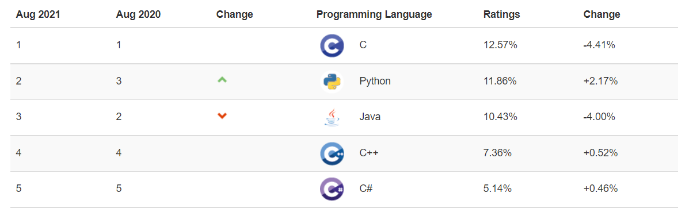
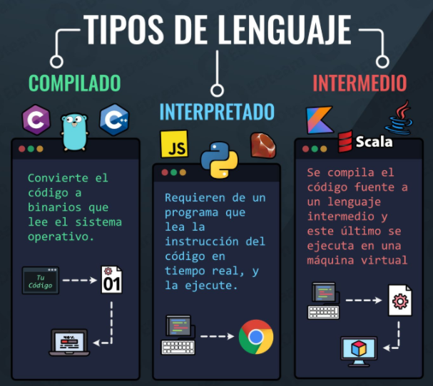
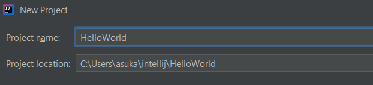
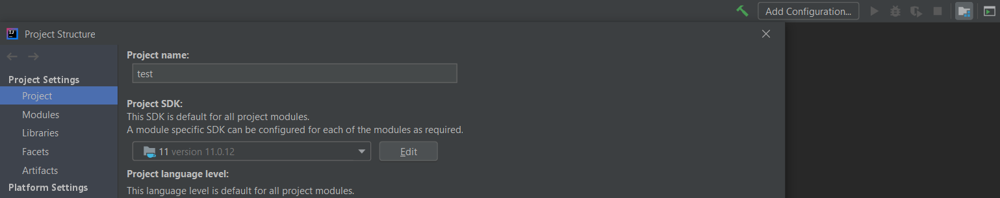
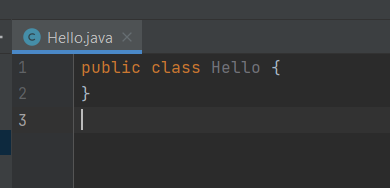
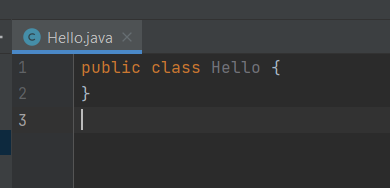
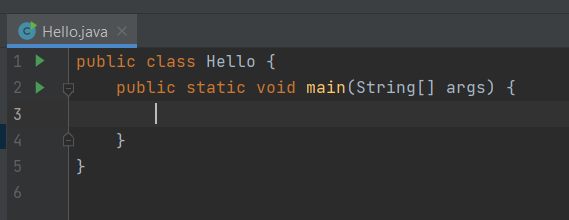
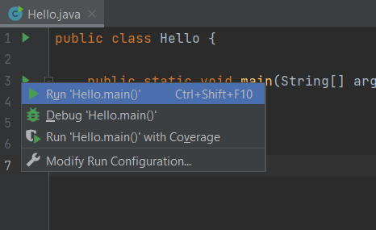
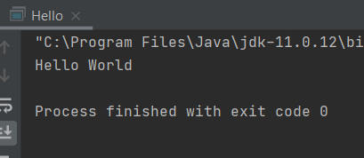
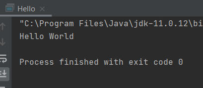

Elementos de un programa informático
Un programa es una secuencia de instrucciones que un ordenador ejecuta para realizar alguna tarea. Parece una idea bastante simple, pero para que el ordenador pueda hacer uso de las instrucciones, deben estar escritas de forma que las pueda usar. Esto significa que los programas deben estar escritos en lenguajes de programación. Los lenguajes de programación se diferencian de los lenguajes humanos ordinarios en que son completamente inequívocos y muy estrictos sobre lo que está y no está permitido en un programa. Las reglas que determinan lo que está permitido se denominan sintaxis del lenguaje. Las reglas de sintaxis especifican el vocabulario básico del lenguaje y cómo se pueden construir los programas.
Lenguajes de programación
Se trata de un conjunto de instrucciones que permite la comunicación de los humanos con los ordenadores. 
- C --> bases de datos, videojuegos, kernel linux, IOT, dispositivos inteligentes, etc.
- Python --> inteligencia artificial, big data, etc.
- Java --> puntos de ventas, aplicaciones de escritorio, cajeros automáticos, dispositivos móviles, ...

¿Con qué lenguaje de programación debo empezar?
En realidad, no existe el mejor lenguaje de programación para empezar, y el lenguaje que elijas prácticamente no tendrá un efecto duradero en tu carrera. Los lenguajes de programación pueden verse muy diferentes en la superficie, pero la mayoría de los conceptos fundamentales se transferirán de un lenguaje a otro. Aprender un nuevo idioma también será más fácil con el tiempo; un principiante puede tardar meses antes de que se sienta cómodo con su primer lenguaje; un programador experimentado puede familiarizarse con un nuevo idioma en cuestión de días.
7 Tips para aprender a programar con éxito
1. Learn by doing. Always play with the code while learning
2. Grasp the fundamentals for long-term benefits
3. Code by hand. It sharpens proficiency and you’ll need it to get a job
4. Ask for help. You’ll need it
5. Seek out more online resources. There’s a wealth of content
6. Don’t just read the sample code. Tinker with it!
7. Take breaks when debugging
Fuente: Coding dojo
Tip
Sé persistente, no te rindas!
JAVA 
Java es un lenguaje de programación orientado a objetos. Fue creado por James Gosling en 1995. Oracle lo compró. Es un lenguaje indepediente de la plataforma donde va a ser ejecutado, esto significa, que una vez que se compila (.class también llamado bytecode) puede ser transportado a diferentes plataformas (Windows, MacOS, Linux) para ser ejecutado. ¿Cómo se hace esto? Utilizando la JVM (Java Virtual Machine). La JVM coge los bytecode compilados y los interpreta dependiendo del OS para poder ser ejecutado. Por tanto, el bytecode siempre es el mismo, pero lo que genera la JVM cambiará para cada SO. También existen otros términos muy famosos relacionados con Java como JRE y JDK.
JRE
Java Runtime Environment. La máquina virtual de Java está incluida en el JRE. Se utiliza para ejecutar aplicaciones Java en el SO, por tanto si queremos desplegar una aplicación en Java, necesitamos tener instalado previamente el JRE para esa máquina y plataforma.
JDK
Java Development Kit. Es más pesado que el JRE, contiene todas las herramientas para programar y compilar las clases Java en bytecode, por tanto cuando desarrollamos clases Java necesitamos el JDK. Además incluy el JRE.
Versiones Java
La última versión de Java se conoce como LTS Release (Long Term Support), y es JAVA 11 LTS ( la LTS 17 estará disponible 14 de Septiembre 2021). Nosotros para el propósito de este curso usaremos Java 11.
¿Porqué Java?
- Nació en 1995 y todavía sigue siendo uno de los lenguajes más usados a nivel mundial.
- Su capacidad de escribirlo y ejecutarlo en cualquier plataforma: "Write once, run anywhere".
- Desde que nació han salido muchas releases de gran importancia, el lenguaje sigue evolucionando con nuevas funcionalidades.
- Tiene un comunidad muy grande de código abierto, documentación y tutoriales. Es usado por muchas compañías de software, por tanto se ofertan muchos empleos de desarrolladores Java.
¿Qué se necesita para programar en Java?
- Instalar el JDK versión 11. Lo podemos descarga desde la página oficial de Oracle.
- Instalar un IDE (Integrated Development Environment), es un programa que te ayudar a desarrollar aplicaciones. Hay muchas opciones disponibles de IDEs.

Setup Java 11 y IntelliJ en Windows
-
Vamos a la página de Oracle y descargamos JDK 11.
-
Instalamos el JDK.
En linux usamos el siguiente comando para instalar el jdk: sudo apt-get install openjdk-11-jdk
-
Windows: Añadimos en las variables de entorno del sistema dentro de la variable Path, la ruta donde se ha instalado java en nuestra máquina (C:\Program Files\Java\jdk-11\bin)
-
Windows: Agregamos también una nueva variable llamada JAVA_HOME --> C:\Program Files\Java\jdk-11 (Ruta de nuestra máquina).
-
Verificamos que se ha instalado java, ejecutando desde línea de comandos:
java --version
-
Descargamos e instalamos IntelliJ Community
-
En File -> Settings, modificamos las siguientes opciones:


Proyecto "Hola Mundo". Estructura de un programa
Cada vez que estás aprendiendo un nuevo lenguaje de programación es una tradición crear un nuevo programa muy simple que genera el texto Hola mundo. Veamos como podemos hacer esto en IntelliJ.
- Hacemos click en crear nuevo proyecto y elegimos el JDK 11 que hemos instalado.

- Luego en Next, Next, añadimos nombre al proyecto y Finish.  
- Creamos una nueva clase Java llamada Hello.java
 
 - Vamos a crear un método para imprimir el mensaje Hola mundo. Usaremos un método especial llamado main. El main es el primer método que Java busca y ejecuta en el proyecto. Es el punto de entrada. 
- Ejecutamos el programa mediante 
- Añadimos y ejecutamos la siguiente sentencia dentro del método main: System.out.println("Hello World");
 

Challenge
Question
Modifica el programa para que imprima por pantalla Hello Teacher.
Question
Realizar las actividades 1 y 2.
Variables
Las variables en Java es una forma de almacenar información en nuestro ordenador. Definimos variables asignándoles un nombre. De igual manera se puede acceder a la información que guardar las variable, simplemente accediendo por el nombre que le hemos dado. Es el ordenador el que se encarga de averiguar dónde se almacena internamente en la memoria RAM del ordenador. Como su nombre indica "variable", se puede modificar el contenido que ésta almacena, es decir, es variable. Lo único que tenemos que hacer es decirle al PC qué tipo de información queremos guardar en nuestra variable y darle un nombre. Existe diferentes tipos de información que podemos utilizar para definir nuestras variables. Se les conoce como tipos de datos o data types. Los tipos de datos son palabras reservas keywords en Java, es decir, no podemos utilizarlas fuera del contexto de tipo de datos. Para definir una variable, necesitamos especificar el tipo de datos, luego darle un nombre a nuestra variable, y opcionalmente, podemos agregar una expresión para inicializar la variable con un valor.
Para nombrar una variable hay que seguir las siguientes reglas:
-
Tiene que comenzar con una letra o '_', nunca con números.
-
Puede contener números. No debe contener espacios en blanco.
-
No debe ser muy largo y debe expresar algo en el contexto.
-
No se pueden usar palabras reservadas.
-
Mayúsculas y minúsculas se tratan diferente.

Definimos nuestra primera variable en el programa de la siguiente forma:

La línea que acabamos de escribir se conoce como sentencia de declaración.
Keywords
Son palabras reservadas del lenguaje. Es decir, son palabras que tienen un significado especial en Java y no puedes usarlas fuera de ese contexto. Ejemplos: public, class, void, static, etc. Existen 61 keywords en Java.
Statements - Sentencias
Hemos comentado que un programa es un conjunto de instrucciones. Estas instrucciones se llaman sentencias o statements en inglés. Una sentencia es un segmento de código que realiza una acción en el programa. A medida que se ejecuta un programa, decimos que ejecuta sentencias, lo que significa que lleva a cabo las acciones especificadas por esas sentencias. En nuestro programa Hello World, tenemos un statement en la línea 4 y 6. La regla en Java es que las sentencias deben terminar con un punto y coma. Si se olvida, se produciría un error de sintaxis.
Sentencias de declaración
Se usan para definir una variable de un tipo de dato en particular. En Java, una variable debe declararse antes de que pueda usarse en un programa. De no hacerlo, se produciría un error de sintaxis. En su forma más simple una declaración incluye el tipo de datos y el nombre de la variable. Opcionalmente se puede establecer la variable a cierto valor. Es decir, se dice que se ha inicializado.
Ejemplos:
int numero;
int a = 3;
int dia;
Sentencias de asignación
Una sentencia de asignación es una sentencia que almacena (asigna) un valor en una variable. Una sentencia de asignación utiliza el signo igual (=) como operador de asignación. En su forma más simple, tiene una variable en el lado izquierdo del signo igual y algún tipo de valor en el lado derecho.
Ejemplos:
numero = 6;
a = 0;
dia = 22;
Challenge
Question
En el programa Hello World, imprime por pantalla la variable miPrimerEntero que hemos creado.
Expressions
Una expresión es un conjunto de variables, operadores e invocaciones de métodos que se construyen para poder ser evaluadas retornando un resultado. Podemos cambiar la expresión y añadir una suma, de forma que quede así:
int miPrimerEntero = 7 + 5;
Java examina la expresión de la derecha del signo igual y ha realizado el cálculo de una expresión matemática. Después ha asignado ese valor a la variable miPrimerEntero. Podríamos complicar más la expresión utilizando operadores como paréntesis, multiplicaciones, divisiones, etc. Los operadores en Java realizan una operación en una variable o valor. Más adelante veremos los diferentes operadores existentes.
Challenge!!
Question
En el programa Hello World, crea las siguientes variables adicionales justo debajo de la declaración "int miPrimerEntero = 7;" en el programa:
- num1 de tipo int y con un valor de 10.
- num2 de tipo int y con un valor de 8.
- y una tercera total que sea la suma de las anteriores.
- imprime por pantalla la variable total.
Paquetes en Java - Java Packages
Un paquete es una forma de organizar nuestros proyectos Java. Se pueden ver como carpetas dentro de la estructuración interna del proyecto.
IntelliJ nos ofrece la opción de automatizar esto cuando creamos un proyecto, simplemente seleccionando la opción:

Tipos de datos
Un tipo de datos es un conjunto de valores y un conjunto de operaciones definidas en ellos.
Se pueden clasificar en primitivos y objetos.

Primitivos
Los primitivos son los más básicos y fundamentales, vienen integrados en Java. Especifican el tipo de valor almacenado en una variable y el tamaño de la memoria. Hay 8 tipos primitivos de datos integrados en el lenguaje Java. Estos incluyen: int, byte, short, long, float, double, boolean y char.
Wrapper classes (clases contenedores)
Las clases contenedoras proporcionan una forma de utilizar tipos de datos primitivos como objetos. En Java, tenemos una Wrapper class para cada uno de los 8 tipos de datos primitivos. Gracias a esto, podemos realizar operaciones en un dato primitivo como por ejemplo en un int:
int minimoValorInt = Integer.MIN_VALUE;
| Primitive data type | Wrapper class |
|---|---|
| byte | Byte |
| short | Short |
| int | Integer |
| long | Long |
| float | Float |
| double | Double |
| boolean | Boolean |
| char | Character |
-
byte: Como su propio nombre denota, emplea un solo byte (8 bits) de almacenamiento. Esto permite almacenar valores en el rango [-128, 127]. Raramente se usa. Ocupa menos memoria y puede ser más rápido accedido.
-
short: Usa el doble de almacenamiento que el anterior, es decir, ocupa 16 bits.
-
int: emplea 4 bytes (32 bits) de almacenamiento y es el tipo de dato entero más empleado. Necesita cuatro veces el espacio que ocupa un byte. Es el entero predeterminado usado en Java.
int maxValor = 2147483647;
// after java 7 and higher
int maxValue = 2_147_483_647;
Note
Casting: Es una forma de convertir un número de un tipo a otro tipo de dato. Para hacerlo ponemos en paréntesis el tipo de dato al que queremos convertirlo.
- long: es el tipo entero de mayor tamaño, 8 bytes (64 bits). Para definir un long, tenemos que hacerlo de la siguiente forma:
long myLongNumber = 500L;
- float: tiene una parte flotante que sirve para expresar números decimales. Es de simple precisión (formato y cantidad de espacio que ocupa) porque ocupa 32 bits. No se recomienda mucho su uso.
float f = 4;
float f = 4f; //también válida
- double: es un número de precisión doble y ocupa 64 bits. Es el flotante predeterminado en Java. Se recomienda su uso. Muchas librerías internas de Java, relacionadas con operaciones matemáticas, usan double.
double d = 5;
double d = 5d; //también válida
- char: se utiliza para almacenar caracteres (letras, números, signos, etc.) individuales. Ocupa 2 bytes en memoria (16 bits). Permite almacenar caracteres Unicode. Unicode es un estándar de codificación internacional que nos permite representar diferentes idiomas; y la forma en que funciona es usando una combinación de los dos bytes que un char ocupa en la memoria, que puede representar hasta 65535 diferentes tipos de caracteres. Unicode table.
char c = 'P';
- boolean: solo permite almacenar dos posibles valores que son true o false. Tiene la finalidad de facilitar el trabajo con valores "verdadero/falso" (booleanos), resultantes por regla general de evaluar expresiones.
boolean isMyNamePatri = true;
No primitivos u objetos
En Java, los tipos de datos no primitivos son los tipos de datos de referencia o los tipos de datos creados por el usuario. Todos los tipos de datos no primitivos se implementan utilizando conceptos de objeto. Cada variable del tipo de datos no primitivo es un objeto. Los tipos de datos no primitivos pueden utilizar métodos adicionales para realizar determinadas operaciones. El valor predeterminado de la variable de tipo de datos no primitivos es nulo.
- String - Cadena de caracteres
Actividad 1 - Crear y compilar un programa en java desde línea de comandos
Crea un PDF llamado "UD1Actividad1.pdf", incluyendo capturas con las siguientes acciones:
- Crea un fichero llamado HolaMundo.java con el siguiente texto:
public class HolaMundo {
public static void main(String[ ] arg) {
System.out.println("Mi primer programa.");
}
}
- Compila el fichero desde la consola usando el compilador de java:
javac HolaMundo.java
- Ejecuta el programa mediante
java HolaMundo
Responde a las siguientes cuestiones en el PDF.
- ¿Se ha generado algún fichero extra al realizar el paso de compilación?, Si es así, ¿cómo se llama el fichero compilado?
- ¿Qué incluye dicho fichero?
- Si ahora quisiera ejecutar el programa HolaMundo desde otro sistema operativo que pasos tendría que realizar?
Súbelo a AULES.
Actividad 2 - Análisis y clasificación de diferentes IDEs
Descarga e instala al menos 3 entornos de desarrollo diferentes a IntelliJ. Crea un nuevo proyecto Java Hola Mundo en cada uno de ellos.
Crea una tabla donde realices una comparativa de ellos y clasifícalos según ciertas características (plataforma, lenguajes que soporta, libres o propietarios, tipo de aplicaciones, uso en el mundo real, fabricantes o empresas, plugins o frameworks que ofrece, etc).
Realiza capturas de pantalla y súbelo en formato PDF("UD1Actividad2.pdf") a AULES.